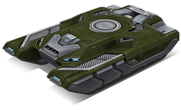
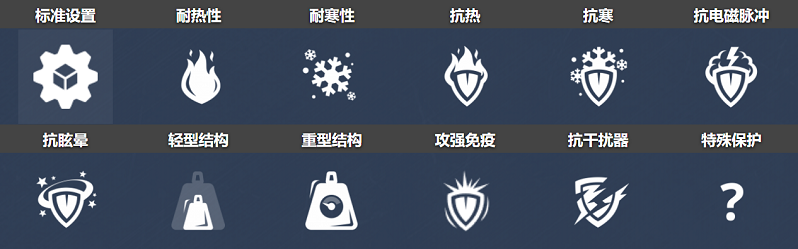
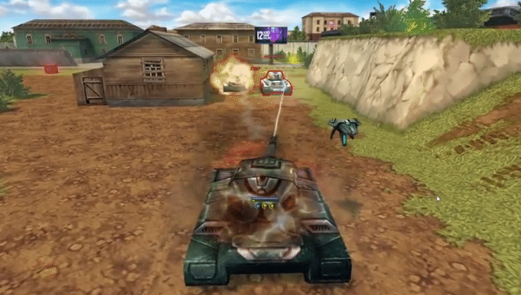
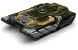
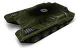
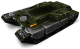
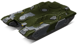

概括
作为猎人中甲的近亲，维京是中等选择的类似流行变体。
维京相当便宜且易于访问（备用 Mk5 改装），是普通玩家车库的可靠资产，使用它会带来回报。
由于其宽大的外形、低矮的外形和居中的炮塔，几乎不可能翻转，这种底盘是稳定性的缩影。
它的速度超过了其他中型底盘，接近于跟上一些轻型底盘，同时保留装甲厚颜无耻地冲向敌人。
虽然它不完全是为赛车黄蜂或对抗猛犸象而设计的，
但聪明的维京用户可以通过绕过障碍物和其他坦克来比大多数敌人更持久，
同时用他们的中心炮塔保持对敌人的良好射击
车库中的描述
中型底盘。它是所有中型底盘中速度最快的。
过速装置可让射速增加，大大增加了炮塔的伤害。
这种底盘包含所有最新的军事技术，结合在一件工程艺术中。
增强的装甲和第二代履带系统使该底盘成为出色的通用坦克。
底盘可用于任何类型的战斗任务——从战略防御到全面正面攻击。
以北方传说中的勇士命名，“维京”是过速激活后最可怕的。
增压武器系统将大大提高安装在船体上的任何炮塔的射击速度，以难以置信的轻松将敌人扫出战场。
其超能力的最佳用途是发动突然袭击，
因为在所有气缸上开火维京很快就成为敌方狙击手的主要目标。
这是公平的，考虑到真正的战士总是直面死亡。
装备改造

过速装置
狂暴

皮肤

维京标准

维京 XT

维京遗产

青春维京

维京超高